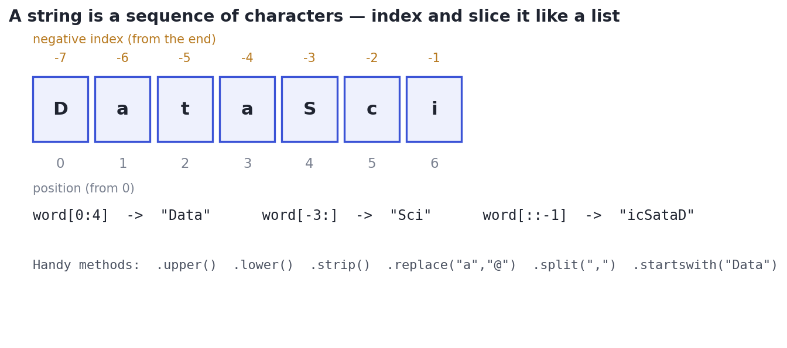

Working with Text & Strings
Index, slice, and clean text — and apply string methods to a whole column at once with pandas' .str accessor.
An enormous share of real data is text: names, cities, product titles, email addresses, free-form notes. Before you can analyze it you have to clean and extract from it — standardize casing, trim whitespace, pull the domain out of an email, split a full name. This lesson gives you Python's string tools and, crucially, pandas' vectorized .str methods that apply them to a whole column at once.
ConceptA string is a sequence of characters
A string (str) behaves like a read-only list of characters: you index it (word[0]), slice it (word[0:4]), and check length with len. The same 0-based, stop-excluded rules from Lesson 1.2 apply, including negative indices from the end.

word[::-1] reverses it. Strings are immutable — methods return a new string rather than changing the original.ConceptEssential string methods
A handful of methods cover most text cleaning. They all return a new string (the original is untouched):
.strip()removes surrounding whitespace;.lower()/.upper()/.title()fix casing..replace(old, new)swaps text;.split(sep)breaks a string into a list;"-".join(parts)stitches a list back together.- Tests:
.startswith(...),.endswith(...), and"x" in textfor containment.
Combine them with f-strings (Lesson 1.2) and you can reshape almost any text.
Concept · the daily toolVectorized strings in pandas: .str
Looping over a text column would be slow and clumsy. Instead, pandas exposes every string method through the .str accessor, applying it to the whole column at once (vectorized, Lesson 1.6): df["city"].str.strip().str.title() cleans an entire column in one line. .str.contains(...), .str.split(...), and .str.replace(...) are the workhorses of text cleaning, and they chain just like regular string methods.
Worked exampleClean a text column
Standardize messy names, then pull structured pieces out of email addresses — all vectorized, no loops.
import pandas as pd
names = pd.Series([" ada LOVELACE ", "Linus Torvalds", "grace HOPPER "])
clean = names.str.strip().str.title() # trim, then Title Case — whole column at once
print("cleaned:", clean.tolist())
emails = pd.Series(["ada@dynamics.com", "linus@kernel.org", "grace@dynamics.com"])
print("domains:", emails.str.split("@").str[1].tolist()) # take part after '@'
print("from dynamics.com:", emails.str.endswith("dynamics.com").tolist())
print("count containing 'a':", int(names.str.contains("a", case=False).sum()))cleaned: ['Ada Lovelace', 'Linus Torvalds', 'Grace Hopper'] domains: ['dynamics.com', 'kernel.org', 'dynamics.com'] from dynamics.com: [True, False, True] count containing 'a': 3
Notice names.str.split("@").str[1] — the first .str splits each string into a list, and the second .str[1] grabs element 1 from each list. Chaining .str is how you peel apart structured text column-wide.
★ Key points to remember
- A string is an indexable, sliceable, immutable sequence — methods return a new string.
- Core methods:
.strip(),.lower()/.upper()/.title(),.replace(),.split()/join(),.startswith(),in. - In pandas, the .str accessor applies string methods to a whole column (vectorized) — no loops.
- Chain
.strcalls (.str.split('@').str[1]) to extract structured pieces from text. .str.contains()is the text version of a boolean mask for filtering rows.
word = "Data", what is the value of word following word.upper()?s of city names with inconsistent spacing and casing. Which cleans the whole column at once?emails.str.split("@").str[1] produce for a Series of email addresses?◆ Practice▸
full = "Ada Lovelace", write expressions to get the first name and the last name.Show solution & reasoning
parts = full.split(" ") # ["Ada", "Lovelace"]
first = parts[0] # "Ada"
last = parts[-1] # "Lovelace"split(" ") breaks the name on the space into a list; index 0 is the first name and index -1 (the last element) is the surname — robust even if there's a middle name.
df whose email column ends in '.edu'. Write the filter.Show solution & reasoning
df[df["email"].str.endswith(".edu")]df["email"].str.endswith(".edu") builds a boolean mask (True for .edu addresses), and df[mask] keeps those rows — the text equivalent of the boolean filtering from Lesson 1.8. Add na=False if the column may contain missing values.
◎ Deep dive: regular expressions, encodings, and splitting text into columns▸
Regular expressions: pattern power. When simple methods aren't enough — extracting all phone numbers, validating an email format, pulling the year out of messy text — you reach for regular expressions (regex): a mini-language for describing text patterns. In pandas, .str.extract(r'(\d{4})') pulls the first 4-digit run from each string, and .str.contains(r'^\d+$') tests a pattern. Regex is famously cryptic, so use it when plain methods fall short — but knowing it exists (and that .str speaks it) unlocks serious text wrangling.
Unicode and encodings. Text is stored as bytes, and the mapping from bytes to characters is an encoding — almost always UTF-8 today. Trouble appears when a file was saved in a different encoding (you'll see garbled characters like 'é' where 'é' should be), which you fix by telling the reader the right encoding (pd.read_csv(..., encoding="latin-1")). It's a frequent real-world headache, and Lesson 2.11 returns to it.
Splitting into columns. .str.split(sep, expand=True) returns a DataFrame instead of a column of lists — perfect for turning 'City, State' into two clean columns in one step. Combined with .str.strip() to tidy the pieces, it's the standard way to parse semi-structured text (addresses, names, codes) into proper columns you can analyze.
Take-homes are full of messy text. Show you reach for vectorized .str methods rather than loops, and mention regex (.str.extract/.str.contains) for pattern extraction. If asked to parse names, emails, or addresses, narrate split-and-index or split(expand=True) into columns — and note that strings are immutable, so methods return new values you must assign.